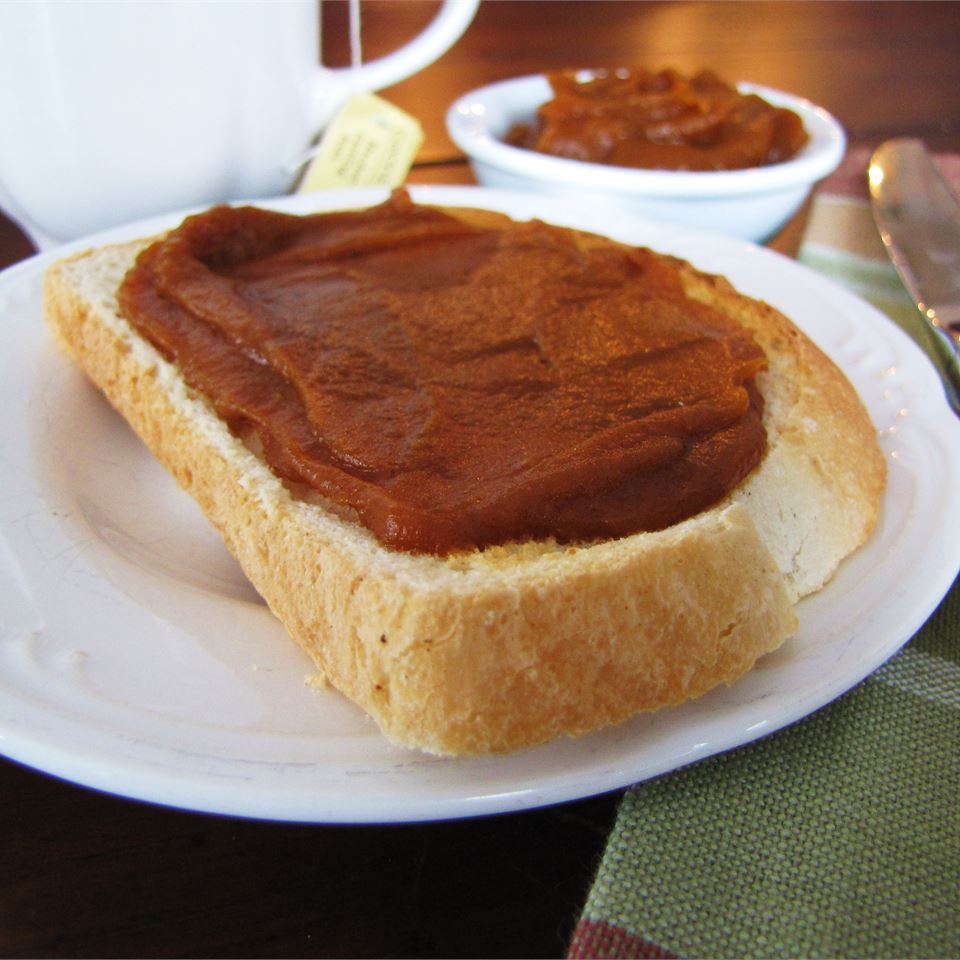

Pumpkin Butter

This pumpkin butter is an excellent hostess present, and is a wonderful spread for toast and muffins. It can also be used to make a spectacular holiday dessert, Pumpkin Pecan Cheesecake.
Ingredients
- 1 (29 ounce) can pumpkin puree
- ¾ cup apple juice
- 2 teaspoons ground ginger
- ½ teaspoon ground cloves
- 1 ½ cups white sugar
- 2 teaspoons ground cinnamon
- 1 teaspoon ground nutmeg
Directions
- Combine pumpkin, apple juice, spices, and sugar in a large saucepan; stir well. Bring mixture to a boil. Reduce heat, and simmer for 30 minutes or until thickened. Stir frequently.
- Transfer to sterile containers and chill in the refrigerator until serving.
Back to Recipes